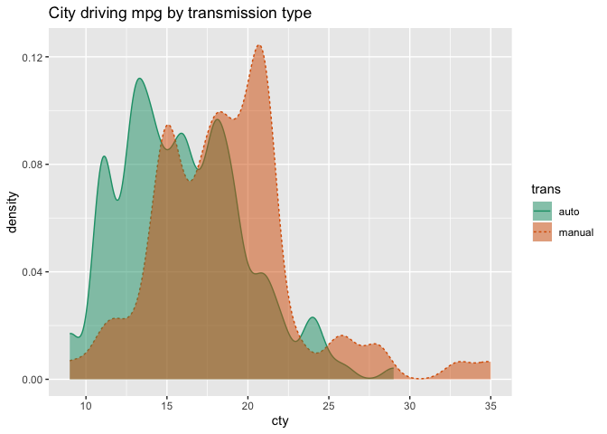
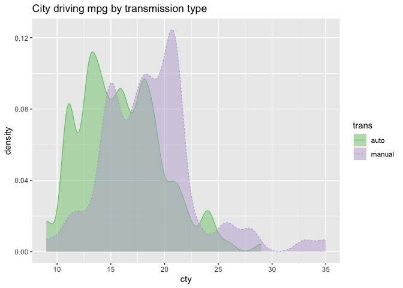
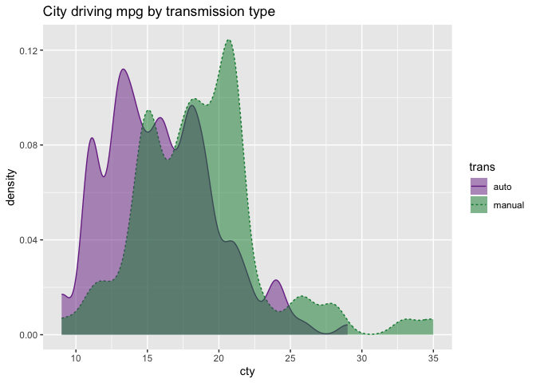
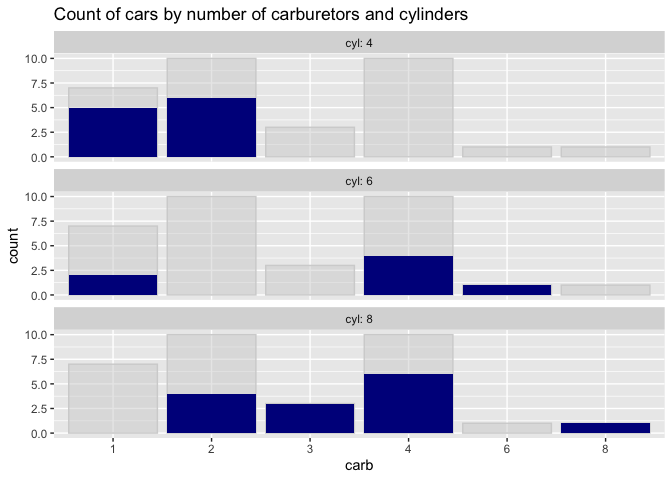
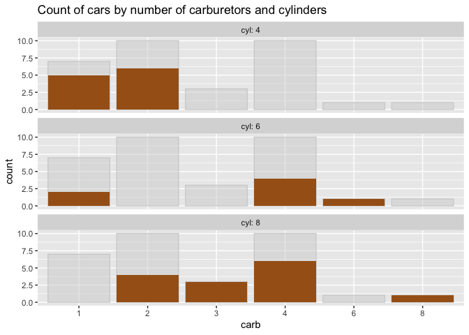

Nina Zumel 9/12/2019
I have put a new release of the WVPlots package up on CRAN. This release adds palette and/or color controls to most of the plotting functions in the package.
WVPlots was originally a catch-all package of ggplot2 visualizations that we at Win-Vector tended to use repeatedly, and wanted to turn into “one-liners.” A consequence of this is that the older visualizations had our preferred color schemes hard-coded in. More recent additions to the package sometimes had palette or color controls, but not in a consistent way. Making color controls more consistent has been a “todo” for a while—one that I’d been putting off. A recent request from user Brice Richard (thanks Brice!) has pushed me to finally make the changes.
Most visualizations in the package that color-code by group now have a palette argument that takes the name of a Brewer palette for the graph; Dark2 is usually the default. To use the ggplot2 default palette, or to set an alternative palette, such as viridis or a manually specified color scheme, set palette=NULL. Here’s some examples:
library(WVPlots)
library(ggplot2)
mpg = ggplot2::mpg
mpg$trans = gsub("\\(.*$", '', mpg$trans)
# default palette: Dark2
DoubleDensityPlot(mpg, "cty", "trans",
"City driving mpg by transmission type")
# set a different Brewer color palette
DoubleDensityPlot(mpg, "cty", "trans",
"City driving mpg by transmission type",
palette = "Accent")
# set a custom palette
cmap = c("auto" = "#7b3294", "manual" = "#008837")
DoubleDensityPlot(mpg, "cty", "trans",
"City driving mpg by transmission type",
palette=NULL) +
scale_color_manual(values=cmap) +
scale_fill_manual(values=cmap)
For other plots, the user can now specify the desired color for different elements of the graph.
title = "Count of cars by number of carburetors and cylinders"
# default fill: darkblue
ShadowPlot(mtcars, "carb", "cyl",
title = title)

We hope that these changes make WVPlots even more useful to our users. For some examples of several of the visualizations in WVPlots, see this example vignette. For the complete list of visualizations, see the reference page.